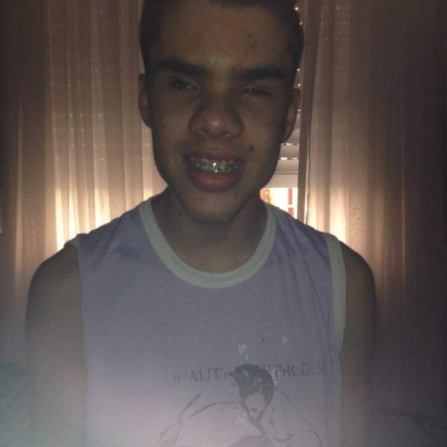
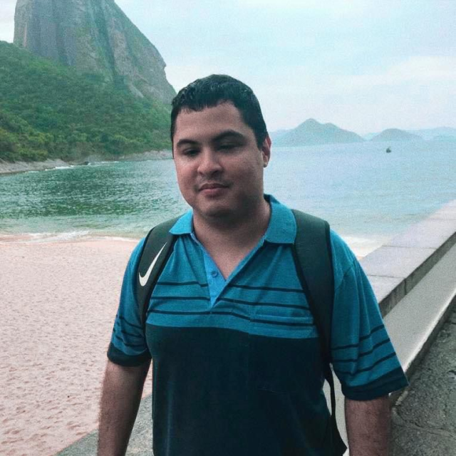

Sobre Nossa Equipe
Daniel Gause

Pedagogo Bacharel em Pedagogia, Pós graduado em educação especial e é Consultor em audiodescrição. Atua
como coordenador de pulíticas públicas para pessoas com deficiência e na coordenação pedagógica.
Tem experiência em Front-End, tecnologias assistivas, QA (IMAG e WCAG), sempre em busca de
aperfeissoamento.
Diego Matos

Estudante, com conhecimentos em tecnologia assistiva e testes de acessibilidade.
formado no curso técnico em informática.
Conhecimentos através da trilha do itaú incluem html, javascript, entre outros.
Marcos Alexandre Neves
Casado 51 anos; Ensino médio;
Trabalhei 25 anos na área de Segurança bancária e patrimonial;
Sou Reabilitado pelo INSS. Com Certificado.
Disposto a a aprender Mais e mais. Educado; honesto ; pontual.
Vinicius Carbonario Hetzel
Cursando bacharel em Sistemas de Informação.
Atua como Analista pleno em Acessibilidade Digital.
Tem experiência em Front-End, tecnologias assistivas, QA em acessibilidade digital (IMAG, WCAG, HTML5 e
JavaScript), sempre em busca de aperfeiçoamento.
Paulo Roberto de Oliveira

32 anos, Tenho bacharelado em serviço social.
Nível básico em NVDA.
pretendo progredir na área do T.I.